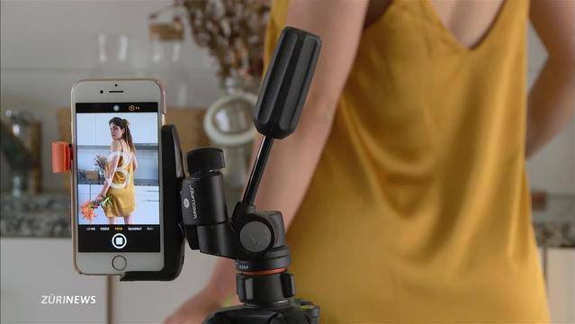

Welcome to Wie man Geld verdient
Wie man von YouTube bezahlt wird und somit Geld verdient - Get Geld - Geld verdienen
2020.12.09 18:24
Getgeld Geschäftsideen Franchise-Liste Geld verdienen eBay Facebook Amazon Branchenbuch Trends Sign in Welcome! Log into your account Ihr Benutzername Ihr Passwort Passwort vergessen? Password recovery Passwort zurücksetzen Ihre E-Mail Sign in Herzlich Willkommen! Loggen Sie sich in Ihrem Konto ein Ihr Benutzername Ihr Passwort Forgot your password? Get help Password recovery Passwort zurücksetzen Ihre E-Mail Ein Passwort wird Ihnen per E-Mail zugeschickt. Get Geld Geld verdienen Getgeld Geschäftsideen Franchise-Liste Geld verdienen eBay Facebook Amazon Branchenbuch Trends Start Geld verdienen Wie man von YouTube bezahlt wird und somit Geld verdient Geld verdienen
Wie man von YouTube bezahlt wird und somit Geld verdient
Von admin - 15 Juli 2019 1 114 Facebook Twitter Pinterest WhatsApp YoutubeMit mehr als einer Milliarde Nutzern und einer Milliarde Stunden pro Tag mehr als 400 Stunden pro Minute hochgeladenem Videomaterial ist YouTube eine hervorragende Möglichkeit für „normale“ Menschen, mit ihren Videos Geld zu verdienen. Sie benötigen keine professionelle Ausrüstung oder besondere Erfahrung, um dies zu erreichen (viele der beliebtesten Videos werden tatsächlich auf Handys mit nicht so großartiger Audioqualität aufgenommen). Sie müssen nur wissen, wie Sie YouTube dazu bringen, Sie zu bezahlen und die Belohnungen können erheblich sein.
Inhaltsübersicht
YouTuber So werden Sie YouTuber 1. Durch Werbeeinnahmen bezahlt werden So werden Sie YouTuber 2. Durch Produktplatzierung Geld verdienen So werden Sie YouTuber 3. YouTube Red Abonnementkanäle So werden Sie YouTuber 4. Was auf Ihrem Kanal sein sollte So werden Sie YouTuber 5. Suchen Sie sich eine profitable Nische aus So werden Sie YouTuber 6. Starten Sie das Erstellen von Videos So werden Sie YouTuber 7. Bauen Sie Ihre Zielgruppe auf So werden Sie YouTuber 8. Fügen Sie regelmäßig neue Videos hinzu So werden Sie YouTuber 9. Große Zahl an Aufrufe und Ansichten bekommen So werden Sie YouTuber 10. Werbung jenseits von YouTubeYouTuber
In diesem Artikel werden einige der einfachsten Möglichkeiten beschrieben, wie Sie mit YouTube Videos Geld verdienen und wie Sie mit dem YouTube-Marketing beginnen können. Wie man von YouTube bezahlt wird und somit Geld verdient
So werden Sie YouTuber 1. Durch Werbeeinnahmen bezahlt werden
Durch Werbeeinnahmen bezahlt werdenJedes Mal, wenn Sie ein Video auf YouTube hochladen, können Sie Geld verdienen. Denken Sie daran, dass Google YouTube besitzt und Google der König der Online Anzeigen ist.
YouTube zahlt dir jedes Mal, wenn jemand auf eine der Anzeigen klickt, die vor dem Start deines Videos erscheinen, oder wenn er auf eine der Werbebanner klickt, die während der Wiedergabe auf Videos erscheinen. Diese Arten von Anzeigen werden als CPC oder Cost-per-Click bezeichnet. Dies bedeutet, dass dem Werbetreibenden eine Gebühr berechnet wird und YouTube und Sie bezahlt werden, wenn ein Besucher auf die Anzeige klickt. Die andere Möglichkeit, bezahlt zu werden, ist, wenn sich jemand einfach die Anzeigen auf Ihren Videos ansieht. Diese werden als CPM (Cost-per-Mille) bezeichnet. Dies bedeutet, dass Sie für jeweils 1.000 Aufrufe einer Anzeige einen bestimmten Betrag erhalten.
Damit dies jedoch möglich ist, müssen Sie sich auf dem Back-End der YouTube- und Google Adsense-Plattform einrichten. Natürlich müssen Sie zuerst einen regulären YouTube-Account haben. Anschließend aktivieren Sie die Monetarisierungsfunktion und verbinden Ihr YouTube Konto mit einem Google AdSense Konto. Ein Google AdSense Konto ist das Konto, über das Anzeigen geschaltet und bezahlt werden können, wenn sie angezeigt oder angeklickt werden. Nun können Sie mit YouTube Videos Geld verdienen!
So werden Sie von YouTube bezahlt: Sie erhalten mehr Geld für “Rollout-Anzeigen”, die vor einem Video geschaltet werden, als für “Banner-Anzeigen”, die während des Videos geschaltet werden. Sie erhalten auch eine viel kleinere Menge, basierend auf der Anzahl der Aufrufe. Wenn jemand eine Anzeige für mindestens fünf oder 30 Sekunden ansieht, wird mehr bezahlt.
Sie könnten möglicherweise mehrere tausend Dollar monatlich verdienen, was ein Vollzeit-Arbeitseinkommen ersetzen könnte. Dazu benötigen Sie eine Million Aufrufe von Videos mit Rollout-Anzeigen. Natürlich benötigen Sie als erstmaliger YouTuber mehrere Videos, um diese Zuschauerzahlen zu erreichen.
Aber es ist machbar, auch wenn es ein Teilzeitjob ist. Wenn Sie es nicht als Vollzeit auf YouTube machen möchten, könnten Sie damit an den Wochenenden zusätzliches Geld verdienen.
Das Bezahlen mit Anzeigen ist die passivste Möglichkeit, mit Ihren YouTube Videos Geld zu verdienen. Alles was Sie tun müssen, ist das Google AdSense Konto einzurichten, der Rest ist vollständig automatisiert.
So werden Sie YouTuber 2. Durch Produktplatzierung Geld verdienen
Durch Produktplatzierung Geld verdienenEine andere Möglichkeit, um auf YouTube Geld zu verdienen, ist die Produktplatzierung. Wenn Sie beispielsweise einen Kanal über Hairstyling haben, können Unternehmen, das Lockenstäbe oder Bürsten herstellen, daran interessiert sein, dass Sie ihre Produkte verwenden und sie Ihren Zuschauern empfehlen.
Je nachdem wie Sie die Vereinbarung mit dem Unternehmen abschließen, werden Sie möglicherweise pro Verkauf oder auf Provisionsbasis bezahlt, z. B. 15 Prozent aller über Ihren Kanal verkauften Produkte. Oder Sie erhalten einen festgelegten Betrag, nur um das Produkt in Ihrem Video zu zeigen oder zu präsentieren. Es gibt viele verschiedene Arten von Vereinbarungen, die Sie mit Sponsoren treffen können, wenn Sie mit Produktplatzierungen in Ihren YouTube Videos Geld verdienen möchten.
Beachten Sie jedoch, dass Sie gemäß den Bestimmungen der Federal Trade Commission, wenn Sie ein Produkt befürworten, transparent sein müssen. Bei YouTube müssen Sie in den Einstellungen des Video-Manager-Dashboards auf das Feld “Bezahlte Werbung” klicken.
So werden Sie YouTuber 3. YouTube Red Abonnementkanäle
YouTube Red AbonnementkanäleYouTube Red, die werbefreie Abonnementplattform von YouTube, ist eine weitere Möglichkeit, Einnahmen zu erzielen. Wenn in Ihrem Kanal mehr als 1.000 Abonnenten aktiv sind, bietet YouTube Red eine Funktion, mit der Sie Zuschauern die Anzeige Ihrer Inhalte in Rechnung stellen und sogar bei Live-Stream-Chats für den speziellen Zugriff bezahlen können.
Diese Premium Funktionen sind nur für YouTuber ab 18 Jahren verfügbar.
So werden Sie YouTuber 4. Was auf Ihrem Kanal sein sollte
Was auf Ihrem Kanal sein sollteDie besten YouTube Kanäle haben derzeit Dutzende, wenn nicht sogar Hunderte von Videos im Netz. Je mehr Videos und Aufrufe, desto mehr Klicks und desto mehr Geld. Sie müssen diesem Modell folgen, wenn Sie in der Hoffnung sind, annähernd den gleichen Erfolg zu erzielen.
Die weltbesten YouTuber decken alle Arten von Nischenmärkten ab. Es besteht also eine gute Chance, dass eines Ihrer Interessen der Weg ist, wie Sie von YouTube bezahlt werden.
So werden Sie YouTuber 5. Suchen Sie sich eine profitable Nische aus
Suchen Sie sich eine profitable Nische ausIn profitablen Nischen wird auf YouTube viel Geld verdient. Einige Beispiele, die gut funktionieren, sind Videospiele, “Unboxing”, Anleitungen und Tutorials, Vlogs (Videoblogs), Produktbewertungen, Gewichtsverlust, Herausforderungen, Einkaufsvideos und Comedy. Es gibt keinen Mangel an profitablen Nischenmärkten, aus denen Sie wählen können.
Idealerweise sollten Sie sich eine Nische aussuchen, die nicht nur rentabel ist, sondern in der Sie entweder Experte sind oder ein gewisses Interesse haben. Authentizität wird in der Regel auf YouTube belohnt. Zuschauer, die einen YouTuber für fake oder unaufrichtig halten, halten sich wahrscheinlich nicht lange auf, geschweige denn klicken auf Werbung.
So werden Sie YouTuber 6. Starten Sie das Erstellen von Videos
Starten Sie das Erstellen von VideosBei den Videos muss es sich nicht um hochpreisige, raffinierte Produktionen für YouTube handeln. Sie müssen anständig aussehen. Konzentrieren Sie sich auf gute Beleuchtung und gute Audioqualität. Verwenden Sie grundlegende Videobearbeitungssoftware wie zum Beispiel iMovie für Apple Produkte (einschließlich iPhone, iPads und Laptops oder Desktops), um Titel, Musiktitel und mehr hinzuzufügen. Für PC Benutzer stehen mehrere kostenlose und kostenpflichtige Optionen zur Auswahl. Meistens bearbeiten Sie das Video, um es dynamischer und interessanter zu gestalten.
So werden Sie YouTuber 7. Bauen Sie Ihre Zielgruppe auf
Bauen Sie Ihre Zielgruppe aufHierfür gibt es einige Möglichkeiten. Eines der Hauptelemente ist die Bereitstellung von unterhaltsamen und nützlichen Inhalten. Geben Sie den Leuten einen Grund, Ihre Videos anzusehen bis zum Ende.
Was dies bedeutet, ist für jede Nische unterschiedlich. Zum Beispiel müssen Sie in der Videospiel-orientierten Nische eine Bildschirmaufnahme von sich selbst zeigen, wenn Sie beliebte Spiele spielen und diese auf unterhaltsame Weise oder auf eine Weise erzählen, die den Spielern hilft, das Spiel selbst zu meistern.
Zeigen Sie bei Videos mit Anleitungen, was Sie in den einzelnen Schritten tun, und zeigen Sie bei Bedarf Nahaufnahmen. Studieren Sie, was andere tun, um ein Modell für Ihre Videos zu erhalten.
Fügen Sie in Ihrem YouTube Konto Keywords zu Ihrem Kanal hinzu und vergewissern Sie sich, dass alle Ihre Videos mit relevanten Keywords gekennzeichnet sind. Sie sollten auch eine detaillierte Beschreibung jedes Videos haben. All dies hilft Leuten, die nach Ihrer Art von Inhalten suchen, Sie zu finden.
Ein großer Vorteil ist, dass YouTube Videos in den Suchergebnissen von Google auf hohem Ranking erscheinen. So können Sie von dieser Quelle viel Verkehr auf Ihre Videos bekommen.
Natürlich hilft es auch, wenn Sie Ihr Video auf Facebook, in Ihrem Blog, in Foren, auf Twitter oder überall dort verbreiten, wo Sie online sind. Wenn es sich um ein Publikum handelt, das Ihr Video schätzen würde, teilen Sie es mit diesen.
Sobald Sie einige Aufrufe erhalten haben, rufen Sie in Ihrem YouTube Kanal Ihr “Back-Office” auf, um die Analysen zu überprüfen. Dort können Sie die Anzahl der Aufrufe für Videos, die Einnahmen und die demografischen Daten des Publikums sehen. Auf diese Weise können Sie in Zukunft Videos erstellen, mit denen Sie mehr Geld verdienen, da sie auf das ausgerichtet sind, was Ihr Publikum mag.
So werden Sie YouTuber 8. Fügen Sie regelmäßig neue Videos hinzu
Fügen Sie regelmäßig neue Videos hinzuLaden Sie regelmäßig neue Videos hoch. Stellen Sie immer nützliche und unterhaltsame Inhalte bereit und achten Sie darauf, dass Sie dasselbe Format verwenden und sich an Ihre Nische halten. Wenn Sie als jemand bekannt werden, der den Leuten zeigt, wie man Scrapbooking macht, sollten Sie kein Video über den Wiederaufbau von Motoren veröffentlichen.
Denken Sie auch daran die Personen, die Ihren Kanal sehen, zum Abonnieren aufzufordern. Auf diese Weise werden sie benachrichtigt, wenn Sie ein neues Video erstellen. Dies entspricht dem automatischen Abrufen von Ansichten.
Als nächstes engagieren Sie sich in der YouTube Community. Wenn Nutzer Ihre Videos kommentieren oder Fragen stellen, antworten Sie. Halten Sie das Gespräch am Laufen. Bleiben Sie hier konsistent und Sie können tausende von Ansichten in jedem Ihrer Videos erzielen. Wie bereits erwähnt, sollten Sie immer mehr Videos hinzufügen.
So werden Sie YouTuber 9. Große Zahl an Aufrufe und Ansichten bekommen
Große Zahl an Aufrufe und Ansichten bekommenMillionen von Ansichten zu bekommen ist schwierig, aber möglich. Man muss viral werden. Es ist eine seltene Sache, aber es ist machbar, wenn Sie sehr unterhaltsame Inhalte bereitstellen können, die in der Regel auch eine Botschaft vermitteln. Sie müssen einzigartig sein. Man kann es ins Rollen bringen, indem man es auch auf andere soziale Medien überträgt. Schließlich braucht man aber auch ein wenig Glück.
So werden Sie YouTuber 10. Werbung jenseits von YouTube
Werbung jenseits von YouTubeWenn Sie vorhaben, das YouTuben zu Ihrem Vollzeit Job zu machen, investieren Sie Zeit und Energie wie bei jedem anderen Job. Wenn Sie eine treue Fangemeinde haben, können Sie möglicherweise Waren mit Ihrem Logo oder Ihrem Markennamen verkaufen.
Die Verbindung zu den Fans aufrechtzuerhalten ist von entscheidender Bedeutung. Erwägen Sie Live-Chats oder persönliche Meetups für extrem engagierte Fans, um wiederum mehr Fans für Ihren Kanal zu gewinnen.
SCHLAGWORTE Geld verdienen sei YouTuber So werden Sie YouTuber Facebook Twitter Pinterest WhatsApp Vorheriger Artikel So werden Sie ein profitabler Amazon Verkäufer Nächster Artikel Einstieg in das Epoxy Bodenbelag Business admin
VERWANDTE ARTIKEL MEHR VOM AUTOR
Geld verdienenWie Sie mit Shopify Geld verdienen
Geld verdienenWie man Digitale Downloads auf Etsy verkauft
Geld verdienenWie man mit Redbubble online Geld verdienen kann.
1 KOMMENTAR
Pureblogtips 31 Juli 2019 At 16:38Good article! Amazing info over here. It is pretty worth enough for me. From my point of view, if all web owners and bloggers made good content as you did, the web will be a lot more useful than ever before. I could not resist commenting. I ‘ve spent 1 hour trying to find such tips. I will also share it with some friends interested in it. I have just bookmarked this web. Now with the work done, I going to enjoy some free online model cams. Thank you very much!! Greetings from Lakeland!
AntwortHINTERLASSEN SIE EINE ANTWORT Antwort abbrechen
Geld verdienenWie Sie mit Shopify Geld verdienen
admin - 5 Dezember 2020 0 Shopify ist eine E-Commerce-Plattform, die immer beliebter wird, insbesondere da die Verbraucher immer mehr zum Online-Shopping übergehen. Einer der besten Aspekte von Shopify ist,...Wie kann ich im Internet etwas verkaufen? Peel-off face mask
Geschäftsideen 30 November 2020Master-Franchise: Warum ein Master-Franchise starten?
Franchise-Liste 28 November 2020Wie sollte beim Ausbruch von Covid-19 ein Büro zu Hause sein?
Branchenbuch 25 November 2020Covid 19, Zweite Welle und 4 Empfehlungen zur psychischen Gesundheit
Branchenbuch 25 November 2020Wie man Digitale Downloads auf Etsy verkauft
Geld verdienen 24 November 2020Wie man mit Redbubble online Geld verdienen kann.
Geld verdienen 24 November 2020Die 7 besten Business-Hörbücher des Jahres 2020
Trends 10 Mai 2020E-Commerce-Idee BABOR DOCTOR LIFTING CELLULAR Collagen Booster Cream, Feuchtigkeitscreme, 50 ml
Amazon 22 Februar 2020E-Commerce-Idee Holzblöcke Puzzles Kinder Spielzeug für Kleinkinder
Amazon 22 Februar 2020AVP Berlin Arbeitsvermittlung & Personalberatung
Branchenbuch 9 Februar 2020IKEA Katalog 2020 Neue Produkte für die Inneneinrichtung, die Sie...
Trends 25 Dezember 2019 Mehr laden Kontaktieren Sie uns: [email protected] Über uns Datenschutzerklärung